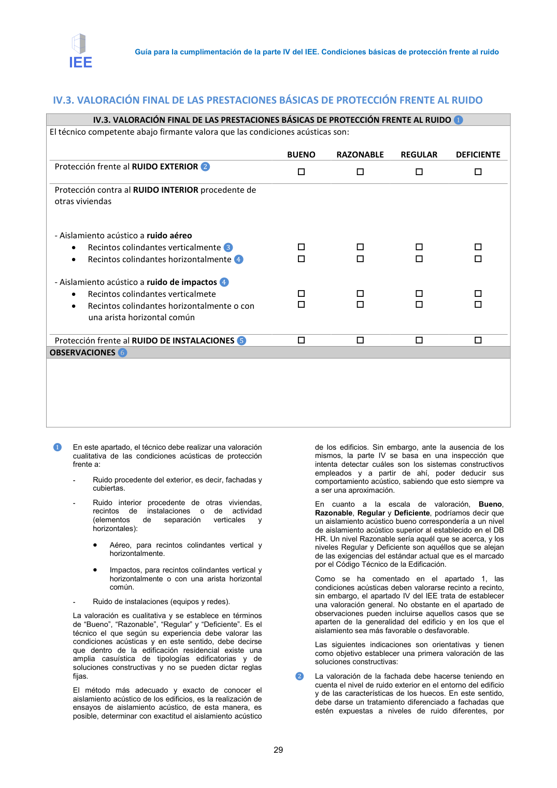

<!doctype html>
<html lang="es"><head><meta charset="utf-8">
<meta name="viewport" content="width=device-width, initial-scale=1">
<title>GUIA · Página física 29</title><link rel="stylesheet" href="../estilo.css">
</head><body>
<nav><a href="../index.html">Índice</a> › <a href="../doc/guia-pdf-a5d4ef5252ba-2016-11-01-813669d3066c.html">GUIA</a></nav>

<h1>GUIA · Página física 29</h1>
<header class="meta"><p><strong>IEE 2016</strong> · edición 2016-11-01 · capa guia</p>
<p>Documento <code>GUIA-PDF-a5d4ef5252ba</code> · SHA-256 del PDF <code>813669d3066c0ff79457d57b80b0512a4fbb248bc5db1f7baf473c369a064738</code></p>
<p>Página física 29 de 65.</p>
<p><a href="../../contenido/docs/GUIA-PDF-a5d4ef5252ba/2016-11-01__813669d3066c/fuente.pdf#page=29">Copia fiel del PDF fuente</a> · <a href="https://www.codigotecnico.org/pdf/Documentos/HR/IEE_2016.pdf">Fuente oficial</a></p>
<p><a href="https://www.codigotecnico.org/Guias/GuiaIEE_HR.html">Ficha de la disposición en la fuente oficial</a></p>
<div class="cita"><p><a href="../../contenido/docs/GUIA-PDF-a5d4ef5252ba/2016-11-01__813669d3066c/fuente.pdf#page=2">Créditos y autoría en el PDF fuente</a>. Reproducción con cita de fuente y autores.</p>
<p>Permiso literal: Se permite la reproducción del contenido total o parcial de esta Guía siempre y cuando se haga citando la fuente original.</p>
<details><summary>Leer los créditos completos y la autoría</summary><pre class="literal">                    Guía para la cumplimentación de la parte IV del IEE. Condiciones básicas de protección frente al ruido


Dirección y coordinación

Luis Vega Catalán

Mª Cristina Colomo Fernández

Eduardo González de Prado

Dirección General de Arquitectura, Vivienda y Suelo. Ministerio de Fomento

Mª Teresa Carrascal García

Instituto de Ciencias de la Construcción Eduardo Torroja. IETcc- CSIC


Autores

Mª Teresa Carrascal García

Amelia Romero Fernández

Mª Belén Casla Herguedas

Unidad de Calidad en la Construcción del Instituto de Ciencias de la Construcción Eduardo Torroja IETcc- CSIC


Se agradece la colaboración de


Belén Delgado Giménez

Fundación FIDAS

Alberto Esteban González

C.T.O. Estudios y proyectos – Gikesa

Giovanni Muzio

C.T.O. Estudios y proyectos

Francisco Labastida Azemar

Arquitecto, asesor CSCAE

Pedro F. Nogueira López

Universidad de A Coruña

Alejandro Sansegundo Sierra

Acústica SanSegundo


Esta Guía para la cumplimentación de la parte IV del IEE. Condiciones básicas de protección frente al ruido, nace en el marco del

convenio de colaboración llevado a cabo entre el Ministerio de Fomento y el Instituto de Ciencias de la Construcción Eduardo Torroja y

forma parte de la estrategia de este Ministerio de generar una serie de documentos de ayuda que faciliten la aplicación de la normativa

de la edificación y que en este caso concreto, ofrezca a los técnicos criterios para poder realizar una evaluación del estado inicial de las

edificaciones en lo referente a las condiciones acústicas de las viviendas existentes y plantear medidas que incrementen su confort

acústico.


En la redacción de este documento se ha utilizado algunos de los contenidos y de las figuras de la Guía de aplicación del DB HR

Protección frente al ruido. Dicha guía puede consultarse en:

http://www.codigotecnico.org/index.php/menu-documentos-complementarios/menu-guia-aplicacion-db-hr


Se permite la reproducción del contenido total o parcial de esta Guía siempre y cuando se haga citando la fuente original.


                                                2</pre></details></div>
<div class="aviso"><strong>Alcance y límites</strong><ul><li>Extracción automática sin revisión técnica humana completa. Contraste tablas, fórmulas, notas y excepciones con el PDF. La edición disponible no determina la vigencia ni la aplicabilidad a un proyecto.</li><li>Guia o documento divulgativo; no es texto normativo.</li><li>Extracción automática; el cotejo humano está pendiente.</li><li>Semántica y tablas no equivalen a validación exhaustiva.</li></ul></div></header>
<nav><a href="guia-pdf-a5d4ef5252ba-2016-11-01-813669d3066c__p0028.html">← Página 28</a> · <a href="guia-pdf-a5d4ef5252ba-2016-11-01-813669d3066c__p0030.html">Página 30 →</a></nav>
<p>Formato: <a href="../../contenido/docs/GUIA-PDF-a5d4ef5252ba/2016-11-01__813669d3066c/pagina/p0029.md">Texto de la página (Markdown)</a></p>
<p><a href="../../contenido/docs/GUIA-PDF-a5d4ef5252ba/2016-11-01__813669d3066c/bloque/p0029.json">JSON de bloques</a></p>
<pre class="literal"> 
Guía para la cumplimentación de la parte IV del IEE. Condiciones básicas de protección frente al ruido 
 
29 
IV.3. VALORACIÓN FINAL DE LAS PRESTACIONES BÁSICAS DE PROTECCIÓN FRENTE AL RUIDO 
IV.3. VALORACIÓN FINAL DE LAS PRESTACIONES BÁSICAS DE PROTECCIÓN FRENTE AL RUIDO ❶ 
El técnico competente abajo firmante valora que las condiciones acústicas son: 
 
 
BUENO 
RAZONABLE 
REGULAR 
DEFICIENTE 
Protección frente al RUIDO EXTERIOR ❷ 
 
 
 
 
 
Protección contra al RUIDO INTERIOR procedente de 
otras viviendas  
 
 
 
 
 
 
 
 
 
 
- Aislamiento acústico a ruido aéreo 
 
 
 
 
• 
Recintos colindantes verticalmente ❸ 
 
 
 
 
• 
Recintos colindantes horizontalmente ❹ 
 
 
 
 
 
 
 
 
 
- Aislamiento acústico a ruido de impactos ❹ 
 
 
 
 
• 
Recintos colindantes verticalme te  
 
 
 
 
• 
Recintos colindantes horizontalmente o con 
una arista horizontal común 
 
 
 
 
 
Protección frente al RUIDO DE INSTALACIONES ❺ 
 
 
 
 
 
OBSERVACIONES ❻ 
 
 
 
 
 
 
 
❶ 
En este apartado, el técnico debe realizar una valoración 
cualitativa de las condiciones acústicas de protección 
frente a: 
- 
Ruido procedente del exterior, es decir, fachadas y 
cubiertas.  
- 
Ruido interior procedente de otras viviendas, 
recintos 
de 
instalaciones 
o 
de 
actividad 
(elementos 
de 
separación 
verticales 
y 
horizontales): 
• 
Aéreo, para recintos colindantes vertical y 
horizontalmente. 
• 
Impactos, para recintos colindantes vertical y 
horizontalmente o con una arista horizontal 
común. 
- 
Ruido de instalaciones (equipos y redes). 
La valoración es cualitativa y se establece en términos 
de “Bueno”, “Razonable”, “Regular” y “Deficiente”. Es el 
técnico el que según su experiencia debe valorar las 
condiciones acústicas y en este sentido, debe decirse 
que dentro de la edificación residencial existe una 
amplia casuística de tipologías edificatorias y de 
soluciones constructivas y no se pueden dictar reglas 
fijas.  
El método más adecuado y exacto de conocer el 
aislamiento acústico de los edificios, es la realización de 
ensayos de aislamiento acústico, de esta manera, es 
posible, determinar con exactitud el aislamiento acústico 
de los edificios. Sin embargo, ante la ausencia de los 
mismos, la parte IV se basa en una inspección que 
intenta detectar cuáles son los sistemas constructivos 
empleados y a partir de ahí, poder deducir sus 
comportamiento acústico, sabiendo que esto siempre va 
a ser una aproximación. 
En cuanto a la escala de valoración, Bueno, 
Razonable, Regular y Deficiente, podríamos decir que 
un aislamiento acústico bueno correspondería a un nivel 
de aislamiento acústico superior al establecido en el DB 
HR. Un nivel Razonable sería aquél que se acerca, y los 
niveles Regular y Deficiente son aquéllos que se alejan 
de las exigencias del estándar actual que es el marcado 
por el Código Técnico de la Edificación.  
Como se ha comentado en el apartado 1, las 
condiciones acústicas deben valorarse recinto a recinto, 
sin embargo, el apartado IV del IEE trata de establecer 
una valoración general. No obstante en el apartado de 
observaciones pueden incluirse aquellos casos que se 
aparten de la generalidad del edificio y en los que el 
aislamiento sea más favorable o desfavorable. 
Las siguientes indicaciones son orientativas y tienen 
como objetivo establecer una primera valoración de las 
soluciones constructivas:  
❷ 
La valoración de la fachada debe hacerse teniendo en 
cuenta el nivel de ruido exterior en el entorno del edificio 
y de las características de los huecos. En este sentido, 
debe darse un tratamiento diferenciado a fachadas que 
estén expuestas a niveles de ruido diferentes, por 
</pre>
<figure><a href="../../contenido/docs/GUIA-PDF-a5d4ef5252ba/2016-11-01__813669d3066c/figura/p0029.png"></a><figcaption>Página visual 29, para contrastar fórmulas, tablas y figuras.</figcaption></figure><h2>Tablas extraídas</h2><p>Datos candidatos: compruebe celdas y notas en el PDF.</p><ul><li><a href="../../contenido/docs/GUIA-PDF-a5d4ef5252ba/2016-11-01__813669d3066c/tabla/p0029_t01.json">p0029_t01.json</a></li></ul>
<h2>Segmentos que incluyen esta página</h2><ul>
<li><a href="../apartado/guia-pdf-a5d4ef5252ba-2016-11-01-813669d3066c__a0017.html">a0017 · Anejo 3. Valoración del aislamiento acústico de elementos de separación horizontales y sus mejoras / sección,</a></li>
<li><a href="../apartado/guia-pdf-a5d4ef5252ba-2016-11-01-813669d3066c__a0018.html">a0018 · Anejo 3. Valoración del aislamiento acústico de elementos de separación horizontales y sus mejoras / sección, / IV.3. VALORACIÓN FINAL DE LAS PRESTACIONES BÁSICAS DE PROTECCIÓN FRENTE AL RUIDO</a></li>
</ul>
<footer>Generado estáticamente desde el corpus normalizado; sin JavaScript ni servicios externos. El HTML es una vista reproducible; conserve la fuente y la edición al citar.</footer>
</body></html>
